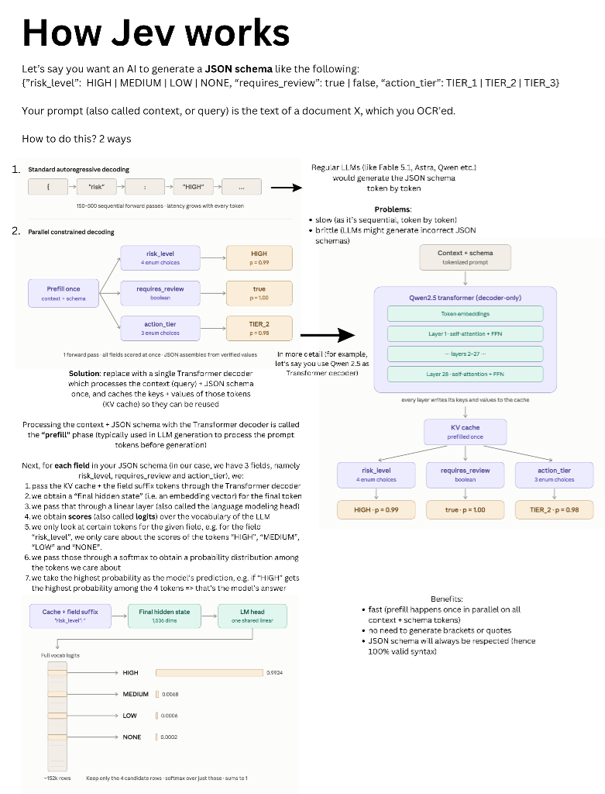

终结自回归税：Jev「System One 模型」的
Token 经济学重构与推理优化全景解析
当整个行业都在自回归生成的“慢思考思维链”上狂奔时，前 OpenAI 核心研究员（ChatGPT / RLHF 发明者）Diogo Almeida 却选择放弃文本生成。为什么说“放弃 Strings”反而引爆了杰文斯悖论？深入剖析 RLCD、并行采样器与每百万 Token 边际成本归零的底层密码。
01 《造工业品，不造神》：告别“无马马车”与智能时代的 SQL 革命
在发布 Jev 的同时，TypeSafe AI 发布了一篇震撼行业的技术宣言——《Composable AI: Build Prod, Not God》（可组合 AI：造工业品，不造神）。
“我们并不打算追逐那个不断后移的‘AGI 终极目标’，因为当今的模型早已跨越了创造巨大经济价值的智力门槛。然而，在全行业投入了数万亿美元后，绝大多数软件依然毫无实质性智能，普通人的生活也未被改变。这向我们敲响了警钟：当前 AI 落地的核心瓶颈根本不是‘原始智力不够’，而是‘今天的智力形态无法被软件直接构建在其上（Hard to build on）’。我们造的是生产级工业品，不是造全能神（We're building prod, not God）！”
告别“无马马车”（Horseless Carriages）
1903 年福特 Model T 问世前，早期汽车被称为“无马马车”：发明家机械地把马换成发动机，却死守高底盘、硬弹簧，甚至保留了插马鞭的插槽（whip socket）！现在的 Chatbot 就是保留了马鞭插槽的过渡品——它假设对面坐着一个人，强行把人类栓在回路中（Human-in-the-loop），导致 AI 无法在系统后台静默运转。
软件运行本质：对语义和意图分支
现代软件从来不是靠“聊天”运行的，而是靠在比特位上的确定性条件分支（if bit == 1）构建起了数字文明。计算机仅靠分支比特就能做这么多事，想象一下如果软件能直接对常识、理解和语义意图进行分支（Branch on intent & understanding）！这就是机器原生神经符号 AI（Neuro-Symbolic AI）的真正威力。
智能时代的“SQL 革命”与分层堆叠
发明数据库的人想不到 Google，发明 TCP/IP 的人想不到 Stripe。今天的大模型智能就像 SQL 诞生前的数据库：强大但每次使用都得特例定制（bespoke）。安全与可信是分层堆叠的前提（Safety is a precondition for layering）——只有组件具备严格类型和校准置信度，工程师才敢把它深埋在生产系统第 5 层依赖链中！
TypeSafe AI 创始人 Diogo Almeida（在 OpenAI 期间曾主导将 InstructGPT/ChatGPT 推向实用的核心 RLHF 方法）在发布 Jev 时直言：正是由于全行业都在沿着“无马马车”的对话助手老路狂奔，导致现有的自回归 LLM 架构撞上了三大无法逾越的工程死锁：
-
死锁 1
字符串依赖税（The String Tax）与格式脆弱性：软件是强类型驱动的（Struct, Enum, Float），而大模型原生吐出的是松散自由的字符串（Strings）。哪怕只要一个简单的布尔判断，也必须在 Prompt 里反复恳求模型“只输出 JSON，不要任何多余字符”，一旦模型附带了
```json或缺少闭合大括号，就会导致下游解析器抛出致命异常。两层嵌套成功率跌至 81%，五层嵌套系统直接崩溃。 -
死锁 2
自回归显存带宽瓶颈（Memory-Bound Latency Wall）：自回归生成每个 Token 都必须将整张 GPU 的全权重和 KV Cache 从显存搬入计算核心一遍。仅仅为了生成一个
{"status": "approved"}，GPU 就需要串行空转数十次前向传播，耗时 2~5 秒，根本无法嵌入 SLA 要求在 200ms 以内的在线交易或微服务流水线。 -
死锁 3
认识论不诚实（Epistemic Dishonesty）：经过传统人类偏好强化学习（RLHF）训练的模型，具有强烈的讨好心理和过度自信倾向。即使在模型完全不知道答案的模糊地带，它也会极其笃定地给出一个错误答案。缺乏校准的概率，使得工程师无法在代码中写下可靠的防御性断言或降级分支。
02 推理底座微架构革新：从自回归解码到并行采样器（Parallel Sampler）
Jev 最具技术颠覆性的突破，在于它在物理底层上彻底剔除了自回归解码循环（Autoregressive Decoding Loop）。
⚡️ 计算微架构对比：传统 LLM 自回归链 vs Jev 单次前向并行采样
Prompt → Prefill → Token 1 → Token 2 → ... → Token N (自回归串行循环)。
- 算子强度跌破 1 FLOP/Byte，显存带宽极度饥饿
- 每一步都需要搬移数十 GB 权重和庞大 KV Cache
- 端到端耗时：3000ms – 15000ms
State Context → 深度表征骨干网 → 并行决策头 (Choice / Score / Noul)。
- 完全处于 Compute-Bound 高效区间，MFU 达 65%+
- KV Cache 内存与调度开销彻底归零
- 端到端耗时：70ms – 250ms（提速百倍）
🔬 执行全景实测链路：How Jev Works（并行受限解码）
下图揭示了 Jev 核心 Parallel Constrained Decoding（并行受限解码） 的物理执行全貌：假设我们要对一段 OCR 文档抽取由 risk_level、requires_review 与 action_tier 构成的 JSON Schema。普通 LLM 需经历 150–500 次串行自回归前向传递；而 Jev 仅需 单次 Prefill 缓存 + 字段后缀并发推导 + 词表 Logits 候选行截断，瞬间在内存中组装出 100% 合法的 JSON。

⚙️ 核心执行流的 7 步微架构解构（以 Qwen2.5 骨干网为例）：
将输入文本（Context/Query）与目标 JSON Schema 一起送入 Transformer Decoder 进行单次 Prefill，计算并驻留各层的 Key/Value 缓存（KV Cache），供后续所有字段共享。
对 Schema 中的每个目标字段（如 risk_level、requires_review），将共享 KV Cache 与对应 Field Suffix Tokens 同时传入解码器，并发提取最终隐层向量（如 1,536 维 Final Hidden State）。
隐层向量经过共享语言模型头（LM Head）投影至全词表 Logits（约 152k 维）。关键在于：根本不进行全词表贪心搜索，而是立即按候选集掩码截断。
仅对预定义的候选 Token（如 HIGH, MEDIUM, LOW, NONE 这 4 行）计算 Softmax（和恒为 1），直接取出最高概率（如 HIGH p=0.9924），并在内存中直接装配成合法 JSON！
🚀 这一计算架构带来的三大工程红利：
- 超高速度（Fast）：Prefill 阶段在所有 Context + Schema 上完全并行，彻底消灭 150~500 次自回归串行空转；
- 零括号/引号生成税：模型完全无需逐字吐出
{、"、:、}等语法字符，节省 90% 以上无效计算； - 100% 格式语法保证：JSON Schema 在底层通过结构体直接填充，数学级保证格式无误（Zero Hallucinations in Syntax）。
📊 真实业务自动化工作流端到端延迟对比 (ms，越低越好)
03 对齐算法革新：从“讨好人类”的 RLHF 走向“置信度校准”的 RLCD
传统的 LLM 强化学习普遍基于 RLHF（人类反馈强化学习）。RLHF 的核心目标是讨好人类标注员，由于人类偏爱语言肯定、逻辑规整的陈述，导致模型被迫学会了“假装自信”；而在数学逻辑场景下使用的 RLVR（可验证奖励），则主要用于激发耗时长达数十秒的慢思考思维链。
TypeSafe 提出了全新的训练范式——RLCD（Reinforcement Learning for Calibrated Decisions，校准决策强化学习）。
🎯 认识论诚实（Epistemic Honesty）的数学定义
RLCD 直接将优化目标瞄准 Brier Score 与预期校准误差（ECE）：
这保证了：当 Jev 输出一个 85% 置信度的判断时，在海量统计中它的实际胜率严格收敛在 85% 左右。它绝不假装 100% 确定，也不随意给出模糊猜测。
from typesafe_sdk import TypeSafeClient, Choice, Score, Noul
client = TypeSafeClient()
# 提交非结构化状态文本，声明强类型期望
decision = client.system_one(
state="用户在最近48小时内发起两次退款申请，当前争议金额 $240，履约物流显示延误3天...",
questions={
"category": Choice(
instructions="工单归类",
options=["logistics_delay", "product_quality", "fraud_suspect"]
),
"risk_score": Score(instructions="欺诈风险综合评级", min=0, max=100),
"auto_refund": Noul(instructions="是否符合快速自动退款策略？")
}
)
# 原生强类型访问，无需任何 json.loads() 或正则提取
print(decision.choices["category"].choice) # -> 'logistics_delay'
print(decision.scores["risk_score"].score) # -> 14.2 (高置信低风险)
# 严格利用校准置信度控制核心业务流转
if decision.nouls["auto_refund"].probability > 0.95:
execute_instant_refund() # 95%+ 真实概率，全自动放行
else:
route_to_human_auditor() # 低于阈值，优雅回退到人工坐席开源社区的“2小时复现”挑衅：Qwen-2.5-1B-RLCD 与 Jev 的技术脱水对决
在 TypeSafe 发布 Jev 并引发轰动后不久，知名开源极客 Harsha Gundala（@harshagundal）在推特与 Hugging Face 上公开发布了开源项目 harshatheg/Qwen-2.5-1B-RLCD，并留下了一句极具火药味的宣言：
“They were building in stealth for 2 years, I was building in stealth for 2 hours…
Happy to open source Qwen-2.5-1B-RLCD, 5x faster on-device inference for JSON workloads that need to be type-safe.
⚡️Demo below on a M4 MacBook⚡️
every LLM has the ability to efficiently batch inference every key of a JSON at the same time and generate probabilities from a set of possible categories. No new training required, but it’s easy to optimize if you need! On hugging face now!”
🔍 技术同构性：开源极客是如何在 2 小时内“祛魅”Jev 的？
Harsha 的开源复现与推文，精准戳破了“全新自研模型架构”的神话外壳，也彻底呼应了我们在前文架构蓝图中所展示的机理：
- 并行约束解码的物理通用性：任何标准因果解码器（Causal Decoder LLM，如 Qwen-2.5-1B/7B）在预填充（Prefill）一次输入上下文之后，其 KV-Cache 已经保留了文档的全部语义；
- 共享 KV-Cache + 后缀并行送入：只需将 JSON Schema 中各个待抽取的 Key/问句（如
risk_level:）并行批处理送入同一个 Transformer 解码步； - 152k 词表切片与局部 Softmax：直接读取最后一个 Token 在未归一化 LM Head 上的 Logits，只截取预定义的候选集合（如
HIGH,MEDIUM,LOW），其余全部 Mask 掉，局部做一次 Softmax。无需生成大括号、引号，也不用自回归串行采样！ - Apple Silicon M4 + MLX 的端侧奇迹：基于 Apple MLX 框架与 M4 芯片统一内存（UMA），1B 模型仅占用不到 2GB 统一显存，端到端延迟低至 10~25ms，吞吐直接提升 5x~7x，且完全本地离线运行，0 API 费用、0 隐私外泄！
⚖️ 技术脱水：开源 2 小时 Logits 掩码 vs 工业级 2 年 RLCD 的残酷分水岭
开源脚本确实跑通了“并行约束解码”的端侧 Demo，但这是否意味着 TypeSafe 团队两年的全职研发只是噱头？绝非如此。 事实上，Harsha 声称的 “No new training required” 恰恰暴露出业余 Demo 与工业级生产系统之间的致命鸿沟：
| 对比维度 | Qwen-2.5-1B-RLCD（开源 2 小时复现） | TypeSafe Jev（工业级 2 年自研沉淀） |
|---|---|---|
| 底层计算机制 | 未微调的基座模型 LM Head 词表切片 + 局部 Softmax | 专用 Typed Head（Choice / Score / Noul）原生多头并行输出 |
| 置信度校准 (ECE) | 严重失真（伪概率） 未经校准的 Logits 受 Unigram 词频先验污染，极易打出 0.999 的虚妄高分 |
数学级校准（认识论诚实） 通过 Brier Score & ECE 强化学习，输出 85% 严格收敛于统计胜率 85% |
| 候选词基数限制 | 严格受限（仅支持单 Token） 若枚举选项由多个 Token 组成（如 logistics_delay），单步切片立即失效 |
高基数原生支持 原生支持高达 255 个任意复杂的选项枚举与连续评分区间 |
| 长上下文语义容量 | 1B 小模型表征坍塌 面对 50 页法律协议、复杂医疗病历或反讽长文，1B 注意力表征极易失序 |
百亿级高维语义蒸馏 保留大参数模型对隐晦转折与长程因果关系的深层抽取能力 |
| 生产自动化可用性 | 仅限玩具与极客 Demo 工程师不敢在代码中写 if prob > 0.95: auto_refund()（会造成企业资金误放） |
生产级系统闭环组件 具备严格 SLA 与合规防御能力，可放心作为企业级自动化第一道守门网关 |
| 最佳落地阵地 | 端侧边缘（On-Device Edge） MacBook/iPhone 本地轻量脱敏、UI 动作路由、离线通知分类 |
企业级云端集群（Cloud System 1） 企业风控、海量工单合规审批、替代/增强 vLLM-SR 网关调度 |
⚠️ 关键结论：“无需新训练（No New Training Required）”是最大谎言
语言模型的未校准输出层本质上不是合法的分类器。如果两个选项在自然语言语料中的基频相差 10 倍，原始 Logits 就会被严重偏置。在 Qwen-2.5-1B-RLCD 中算出的所谓“0.95 概率”，可能在现实测试集中连 60% 的准确率都达不到。这正是为什么真实业务系统绝不敢仅凭一段 2 小时写的切片脚本就将自动化控制权交给它。Jev 研发 2 年的真正技术壁垒，是利用 RLCD 彻底消除了模型“过度自信”的幻觉，赋予了概率以严谨的工程度量价值。
04 Token 经济学重构：为什么输出 Token 可以“免费”？
在主流云厂商的大模型定价单上，输出 Token（Completion Token）的单价普遍是输入 Token（Prompt Token）的 3 到 5 倍。例如 GPT-4o 输出 \$10/M、Claude 3.5 Sonnet 输出 \$15/M。
| 模型阵营 | 采样与计算机制 | 输入单价 (MTok) | 输出单价 (MTok) | 格式错误率 | 单次决策典型耗时 |
|---|---|---|---|---|---|
| GPT-4o / GPT-5 级 | 串行自回归解码 | $2.50 – $5.00 | $10.00 – $15.00 | 0.5% – 2.5% | 2,500 – 6,000 ms |
| Claude 3.5 / Fable 级 | 串行自回归解码 | $3.00 | $15.00 | 0.3% – 1.8% | 2,000 – 5,000 ms |
| TypeSafe Jev (S1) | 一次前向并行采样 | $0.042 | FREE ($0.00) | 0.00% (数学保证) | 70 – 250 ms |
为什么 Jev 的输出 Token 能够宣布免费？
因为在传统自回归模型中，输出昂贵的本质是全权重显存带宽独占税——每吐一个字，GPU 都要把整卡显存遍历一遍；而 Jev 放弃了自回归文本生成，在输入经过骨干网络抽取的最后一刻，输出决策头（Classification / Regression Heads）在同一个 GPU 算子批次内瞬间完成计算，其产生的附加计算量在整个前向中占比不足 0.01%，其边际推理成本低到无法单独计量！
🔥 杰文斯悖论（Jevons Paradox）的二次引爆
1865 年，经济学家杰文斯观察到蒸汽机使煤炭效率飙升，结果煤炭总消耗不降反升千倍。TypeSafe 将模型命名为 Jev，正是断言：
“当单次大模型智能决策的成本从 0.8 美分断崖式下跌至 0.004 美分（跌落 200 倍），并且响应时延压入 100 毫秒以内时，企业不会减少 AI 预算，而是会把原本由于成本过高而无法自动化的百亿级低价值场景——网络安全探针分析、海量日志语义提取、每一封邮件的情绪路由、每一个微服务的入参合规校验——全部装上 AI。”
05 交互式测算：业务自动化工作流 TCO 节省沙盘
模拟您的企业若将日常决策工作流从传统通用大模型迁移至“Jev (System 1) + 深度模型 (System 2) 双层漏斗”后的综合财务影响：
06 产业架构终局：System 1 与 System 2 的双层漏斗共生
Jev 的出现并不意味着生成式大模型或推理大模型（如 DeepSeek-R1、o3、Claude 3.7）会消亡。相反，它指明了未来大模型基础设施的**终极协同架构——双层分流漏斗（Two-Tier Hybrid Funnel）**：
第一层：System 1 极速常驻门禁 (Jev / 专属决策模型)
承担 100% 原始流量。在 100ms 内对上下文进行特征投影与置信度判定。处理常规分类、风控初筛、违规拦截与字段提取，就地终结 90% 以上的高频决策。
第二层：System 2 慢思考长链推导 (DeepSeek-R1 / o3)
仅承接 System 1 筛选出的 10% 异常案、复杂长程逻辑与低置信度边缘案例。此时给予其充足的思考时间（10~60 秒）和高溢价 Token 预算，换取复杂决策的最优解。
07 深度实战攻坚：Jev 能否替换/重构 vLLM-SR 等前置语义路由网关？
在近期的开源推理生态中，vLLM-SR（vLLM Semantic Router） 等语义网关成为了多模型混合架构（Mixture-of-Models, MoM）的核心枢纽。架构师们普遍在思考一个极其尖锐的工程问题：Jev 是否可以替换掉 vLLM-SR 这类前置语义路由与安全网关模型？
答案是：不仅完全可以，而且在计算范式和 Token 经济学上，Jev 对现有网关模型构成了降维打击。
⚖️ 现有前置路由机制与 Jev 的三难困境对比
致命硬伤：速度虽快（5~10ms），但缺乏深层推理与注意力机制。面对逻辑转折、长上下文或对抗式越狱攻击时，误判率极高。
致命硬伤：仍处于自回归 Decode 的显存带宽瓶颈，耗时 150~300ms；且未经置信度校准，无法设置严谨的置信度降级阈值。
致命硬伤：成本倒挂与延迟失控。网关决策耗时高达 800~1500ms 且按 Token 逐字计费，“网关比实际业务调用更贵更慢”。
⚡️ Jev 赋能语义网关的“三原语映射”
Jev 的三大类型原语与语义网关的全部职责实现了像素级精准对齐：
-
Choice
➔ 目标模型路由：
Choice(options=["flash_local", "deepseek_r1", "rag_pipeline"])，直接出枚举值，0% 格式错误。 -
Score
➔ 任务复杂度量化：
Score(min=0, max=100)，70ms 内输出校准的数值复杂度指标，精准界定是否需要慢思考。 -
Noul
➔ 安全护栏与越狱拦截：
Noul(instructions="检测提示词注入与违规敏感内容")，与路由在同一次前向中完成，零二次串联开销。
落地范式 1 · 自建轻量网关【直接替代】
对于目前内部自研轻量路由代理的团队，可以直接废弃繁琐脆弱的 Prompt + 正则清洗代码，换成仅数十行 Python 代码的 Jev 原生 SDK。不仅单次路由成本降至 $0.00004（降幅 99%），且完全消除 JSON 崩溃重试。
落地范式 2 · 企业大规模集群【强强联合】
在大型 K8s 推理集群中，最优实践是保留 vLLM-SR 的底盘与网络层（连接池、OpenAI 协议兼容、Kubernetes 调度），而将 Jev 作为 vLLM-SR 的核心信号生成器（First-Class Signal Provider），由 Jev 负责提取深层意图并注入决策！
08 总结与启示：对开源推理引擎与自研硬件的思考
TypeSafe Jev 给我们带来的最重要启示是：过度迷信自回归生成是推理工程的一条巨大弯路。
在开源生态中，我们不必等待闭源 API。借助开源 SOTA 权重（如 Qwen2.5/Qwen3.8、DeepSeek 蒸馏系列），通过剥离词表解码器、挂载专用决策头并使用 RLCD 方法进行概率校准训练，我们完全可以在本地硬件（例如我们的 4× NVIDIA L20 裸金属集群、Apple Mac Studio 512GB UMA 或 GB10）上构建高并发、超低延迟的开源 System One 引擎！